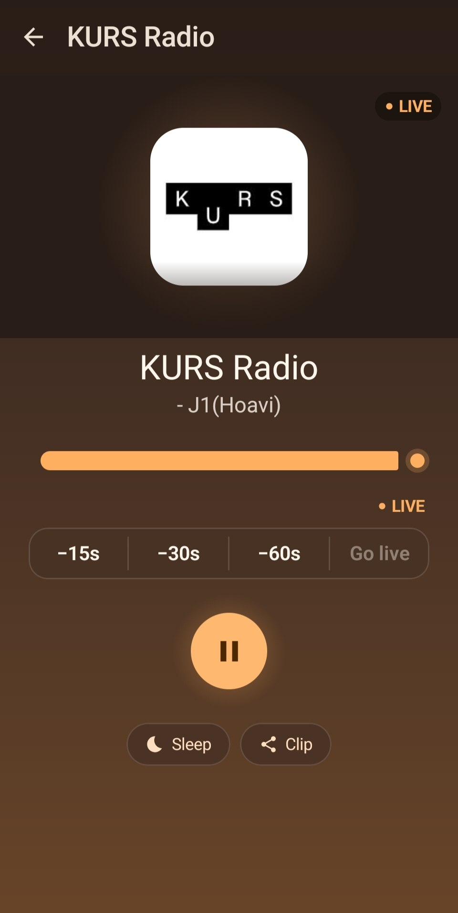
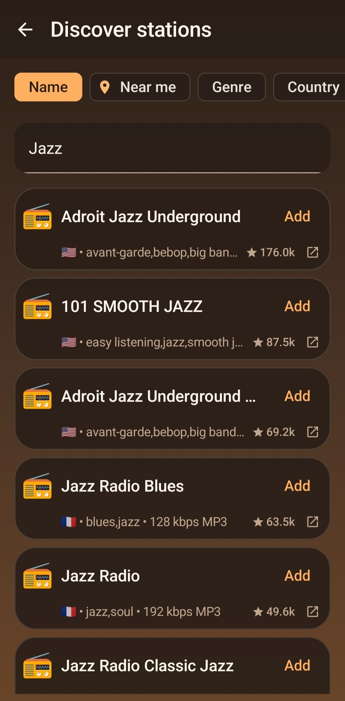

Большинство радиоприложений ждут, что вы сами найдёте прямую ссылку на .mp3
или .m3u8. Freqcast сначала проверяет каталог Radio Browser, затем сканирует
сам сайт, находит рабочий поток и убеждается, что он действительно играет — прежде чем
добавить его в библиотеку.
БЕЗ АККАУНТА · БЕЗ РЕКЛАМЫ · БЕЗ ПРИВЯЗКИ К КАТАЛОГУ · GPL-3.0

Главная идея
Добавление станции не должно требовать инспектора ссылок
1
Вставьте ссылку
Вставьте адрес сайта станции — это всё, что нужно Freqcast.
2
Freqcast начинает поиск
Сначала проверяется каталог Radio Browser, затем сама страница — в поисках рабочего потока.
3
Проверено, затем сохранено
Поток тестируется перед тем, как попасть в библиотеку, — нерабочие ссылки туда не проникнут.
На основе реальных отзывов
Реальные жалобы, реально исправленные
Не гипотетические проблемы, а повторяющиеся жалобы на радиоприложения, собранные из публичных отзывов и форумов.
«Реклама врезается в поток каждые 5–10 минут — иногда просто обрывая воспроизведение.»
Ноль рекламы. Всегда.
«Нет способа сохранить список станций или перенести его на новый телефон.»
Экспорт и импорт — JSON, OPML, M3U, PLS
«Избранное нельзя переупорядочить — остаётся тот порядок, в котором добавляли.»
Перетаскивание для сортировки в любой момент
«Оказалось, что «радио»-приложение втихую гоняло десятки трекеров.»
Ноль трекеров. GPL-3.0
«Добавить поток вручную либо нельзя, либо приложение падает при переподключении.»
Ручное добавление + переподключение с растущими паузами
«Нет Android Auto — пробел, который open-source радиоприложения не могли закрыть годами.»
Android Auto — с первого дня
«Нет виджета на главном экране — каждое включение начинается с открытия приложения.»
Виджет на главном экране включён
Всё включено
Один плеер, без компромиссов
Все функции ниже доступны в одной и той же бесплатной сборке — ничего не ограничено, не закрыто и не продаётся отдельно.
Не нужно искать ссылку на поток
Вставьте сайт станции — Freqcast сам найдёт и проверит рабочий поток.
Поиск станций
Ищите в каталоге Radio Browser по названию, жанру, стране, языку или станции рядом с вами.
Само переподключается
Фоновое воспроизведение с постепенно растущей паузой при обрыве сети — а не бесконечный долбёж.
Таймшифт
Перемотка живого эфира на поддерживаемых потоках — пропустили момент? Отмотайте на 15, 30 или 60 секунд.
Метаданные трека в реальном времени
ICY-метаданные показывают текущий трек, копируются одним касанием.
Таймер сна и будильники
Плавное затухание и остановка по таймеру, или пробуждение под любую станцию с несколькими ежедневными будильниками.
Виджет и Android Auto
Виджет на главном экране для запуска в одно касание и список станций на экране автомобиля.
Импорт и экспорт
Переносите библиотеку через JSON, OPML, M3U или PLS — смена устройства без пересборки списка.
Адаптировано под любой экран
Двухпанельный интерфейс для планшетов и складных устройств, локализация на английский, русский, испанский и упрощённый китайский.
Внутри приложения
Взгляд изнутри
Всегда тёмная тема по дизайну — тёплая янтарная палитра на угольном фоне, которую легко читать в любое время суток.
Ваша библиотека. Перетаскивание для сортировки, свайп для отправки или удаления.

Discover. Поиск по глобальному каталогу станций — по названию, жанру, стране или языку.
Сейчас играет. Таймшифт, название трека, таймер сна и отправка отрывков — на одном экране.
Почему Freqcast
Без аккаунта. Без рекламы. Без привязки к каталогу.
Интернет-радио незаметно живёт уже несколько десятилетий, но Android-приложения вокруг него
стали фрагментированными — реклама, закрытые каталоги станций, аккаунты, которые никто не
просил. Freqcast хранит всё локально и работает с любой станцией, у которой есть публичный
HTTP/HTTPS или HLS поток.
Полностью локально
Список станций хранится в базе данных на устройстве. Ничего не синхронизируется с серверами вне вашего контроля.
Открытый код, GPL-3.0
Весь исходный код на GitHub. Изменённые или распространяемые версии тоже обязаны оставаться открытыми.
Разрешения, которые можно проверить
Каждое разрешение ниже соответствует конкретной функции. Ничего не запрашивается «про запас».
Разрешение
Для чего
INTERNET ACCESS_NETWORK_STATE
Воспроизведение потока и проверка соединения.
FOREGROUND_SERVICE _MEDIA_PLAYBACK
Поддерживает воспроизведение звука в фоне.
POST_NOTIFICATIONS
Показывает уведомление о воспроизведении (Android 13+).
WAKE_LOCK
Не даёт сети «уснуть», пока играет музыка при выключенном экране.
RECEIVE_BOOT_COMPLETED SCHEDULE_EXACT_ALARM
Позволяет будильникам переживать перезагрузку и срабатывать точно вовремя.
ACCESS_COARSE_LOCATION
Только для поиска «рядом со мной» в Discover — передаётся один раз для этого запроса и нигде не сохраняется.
Установить Freqcast
Скачайте последний подписанный APK из GitHub Releases — без аккаунта Play Store, без входа.